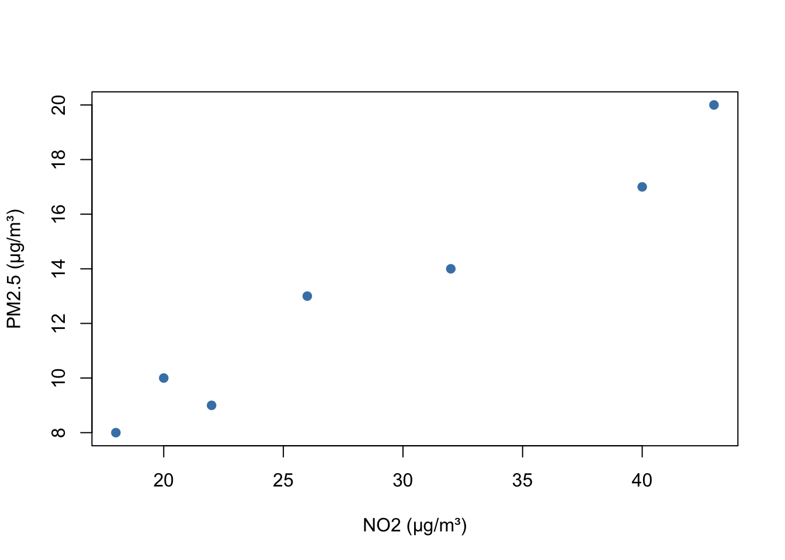
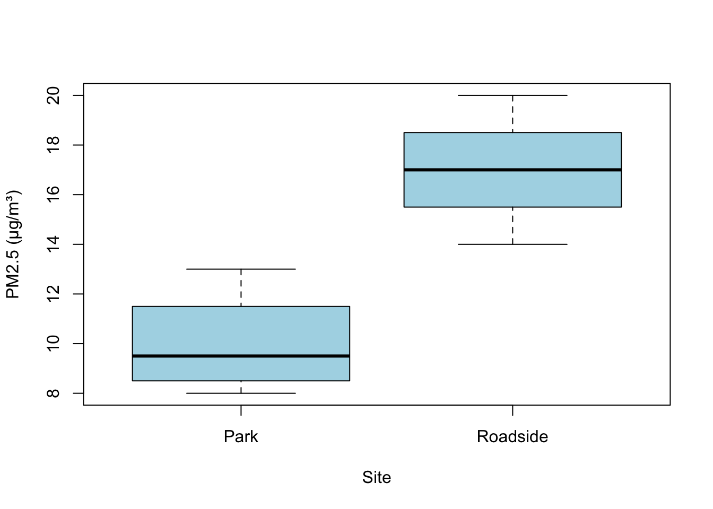

# Save four readings in a vector.
readings <- c(12, 15, 18, 21)
readings[1] 12 15 18 21mean(readings)[1] 16.5Set aside 30–45 minutes. You’ll use a small set of fictional air-quality readings to practise running R code, inspecting a dataset, calculating summaries and making plots.
Use File > New File > R Script and save the script as air-quality-practice.R. Copy each example into the script. Put your cursor on a line and press Ctrl+Enter on Windows or Cmd+Enter on Mac. For a command that spans several lines, select the whole command before running it. Results appear in the Console, saved objects in the Environment, and charts in Plots. Lines beginning with # are comments.
# Save four readings in a vector.
readings <- c(12, 15, 18, 21)
readings[1] 12 15 18 21mean(readings)[1] 16.5<- saves a value under a name. c() combines values into a vector. In mean(readings), mean() is the function and readings is its argument. Text such as "Roadside" goes in quotes. TRUE and FALSE are logical values, and NA marks a missing value.
Try it. Add a reading of 24 and recalculate the mean.
Run readings <- c(12, 15, 18, 21, 24) and then mean(readings). The result is 18.
Run the whole block to create the practice data. Each row represents a reading and each column contains one variable. Both pollutants are measured in micrograms per cubic metre (µg/m³).
air <- data.frame(
day = c(1, 2, 3, 4, 1, 2, 3, 4),
site = c("Roadside", "Roadside", "Roadside", "Roadside",
"Park", "Park", "Park", "Park"),
no2 = c(32, 40, 36, 43, 18, 22, 20, 26),
pm25 = c(14, 17, NA, 20, 8, 9, 10, 13)
)
head(air) day site no2 pm25
1 1 Roadside 32 14
2 2 Roadside 40 17
3 3 Roadside 36 NA
4 4 Roadside 43 20
5 1 Park 18 8
6 2 Park 22 9str(air)'data.frame': 8 obs. of 4 variables:
$ day : num 1 2 3 4 1 2 3 4
$ site: chr "Roadside" "Roadside" "Roadside" "Roadside" ...
$ no2 : num 32 40 36 43 18 22 20 26
$ pm25: num 14 17 NA 20 8 9 10 13air$pm25[1] 14 17 NA 20 8 9 10 13air[air$site == "Park", c("day", "pm25")] day pm25
5 1 8
6 2 9
7 3 10
8 4 13Use $ to select a named column. In air[rows, columns], the expression before the comma selects rows and the expression after it selects columns. == checks whether values match. For a worksheet supplied as a CSV, air <- read.csv("air-quality.csv") would load it if that file were in R’s working directory. Use getwd() to check the directory.
Try it. Show all columns for the roadside readings.
air[air$site == "Roadside", ] returns four rows. The empty space after the comma keeps all columns.
summary(air$pm25) Min. 1st Qu. Median Mean 3rd Qu. Max. NAs
8.0 9.5 13.0 13.0 15.5 20.0 1 mean(air$pm25, na.rm = TRUE)[1] 13median(air$pm25, na.rm = TRUE)[1] 13sd(air$pm25, na.rm = TRUE)[1] 4.396969IQR(air$pm25, na.rm = TRUE)[1] 6The mean and median describe the centre. The standard deviation and interquartile range describe spread. summary() also shows the minimum, maximum and quartiles for a numeric column. na.rm = TRUE skips missing values for that calculation.
tapply(air$pm25, air$site, mean, na.rm = TRUE) Park Roadside
10 17 tapply() applies a function to groups. Here it takes the PM2.5 values, splits them by site and calculates a mean for each site.
Try it. Change the command to calculate the median PM2.5 for each site.
tapply(air$pm25, air$site, median, na.rm = TRUE) gives 9.5 for Park and 17 for Roadside.
A scatterplot shows how two numeric variables vary together. Here NO₂ is on the horizontal axis and PM2.5 is on the vertical axis. The reading with missing PM2.5 is omitted.
plot(air$no2, air$pm25,
xlab = "NO2 (µg/m³)", ylab = "PM2.5 (µg/m³)",
pch = 19, col = "steelblue")
A boxplot compares distributions between groups. In pm25 ~ site, read ~ as “by”. The data argument tells R where to find the columns.
boxplot(pm25 ~ site, data = air,
xlab = "Site", ylab = "PM2.5 (µg/m³)",
col = "lightblue")
Try it. Make a boxplot of NO₂ by site. Which site has the higher median?
boxplot(no2 ~ site, data = air, ylab = "NO2 (µg/m³)") shows a higher median at the roadside site.
Run your script from the top. Pick a command and change one argument, then explain what changed in the output.
cor.test() and lm() to explore relationships between pollutants.t.test() to compare pollutant levels.